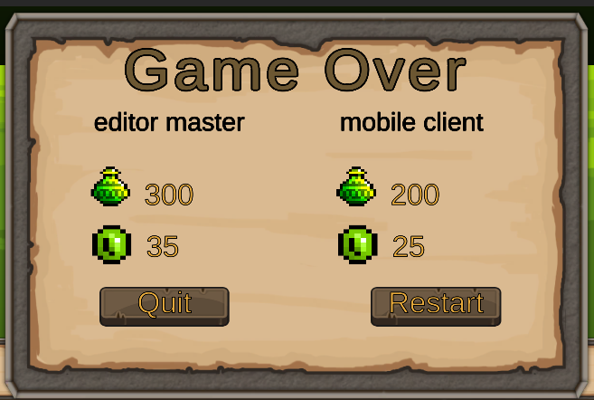
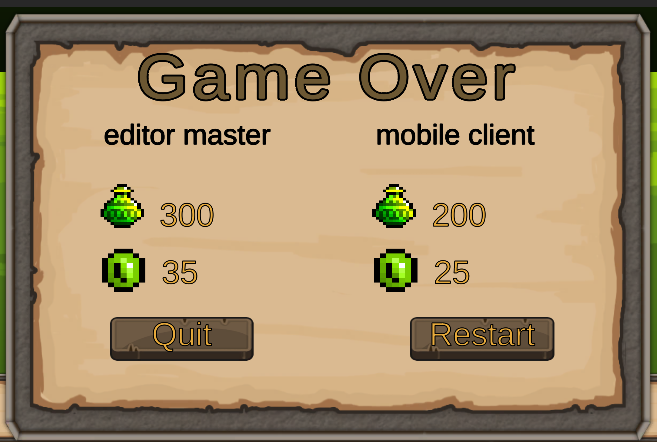

First Android Game - Part 18 - Syncing Gameover
Aug 23, 2023
This is part 18 of making my first Android Game. If you missed part17, you can find it here
First step was to enable the gameover menu when both players have 0 lives. In ScoreManager.cs OnPlayerPropertiesUpdate(), I would call a new function called CheckEndOfGame() function. This is the same way that the AsteroidGame example did it
 CheckEndOfGame() would do two things, first it checks if all the players have 0 lives. If not, set the local boolean allDestroyed to false and break out of the function
CheckEndOfGame() would do two things, first it checks if all the players have 0 lives. If not, set the local boolean allDestroyed to false and break out of the function
 CheckEndOfGame() would then check if allDestroyed is true, if so, stop all coroutines if it's the master and then invoke the no lives event
The GameOverMenu.cs has NoLivesEvent subscribed to a function called NoLives() function which enables the gameover menu
Next I need to make sure when the player has 0 lives, it does not respawn. In Player.cs, HitByEnemyRoutine() function, I wrapped the respawning code in a if statement that checks if the player has more then 1 life
So far the result looks like this. The gameover menu does not have the values synced yet
CheckEndOfGame() would then check if allDestroyed is true, if so, stop all coroutines if it's the master and then invoke the no lives event
The GameOverMenu.cs has NoLivesEvent subscribed to a function called NoLives() function which enables the gameover menu
Next I need to make sure when the player has 0 lives, it does not respawn. In Player.cs, HitByEnemyRoutine() function, I wrapped the respawning code in a if statement that checks if the player has more then 1 life
So far the result looks like this. The gameover menu does not have the values synced yet
 To sync the values on the gameovermenu. I made a prefab simliar to the PlayerTextInformation.prefab being displayed on the scoreboard. Except this prefab is called PlayerGameOverInfo.prefab and will be on the GameOverMenu. This prefab has an image component because it will be childed to a horizontal layout group. It also contains PlayerTextInformation(Script) component.
The NoLives() function from GameOverMenu.cs is modified so that it loops through all the players and displays the name, score and coins
The gameover menu now displays the correct information. However you may have noticed the text looks squished.
This is because I spawn the the PlayerGameOverInfo.prefab and then child it to the parent. So instead I changed so that the I Instantiate the PlayerGameOverInfo.prefab AND child it at the same time using the Instantiate function
Now the text in PlayerGameOverInfo.prefab scale looks perfect

I removed the restart. The Quit button the GameOverMenu calls "PhotonNetwork.Disconnect();" instead of LoadScene(). This works because remember in GameManager.cs, the OnLeftRoom() callback calls UnityEngine.SceneManagement.SceneManager.LoadScene(mainMenuScene). ONLeftRoom() gets called when PhotonNetwork.Disconnect() is called.
Recent blogs
See all blogs
To sync the values on the gameovermenu. I made a prefab simliar to the PlayerTextInformation.prefab being displayed on the scoreboard. Except this prefab is called PlayerGameOverInfo.prefab and will be on the GameOverMenu. This prefab has an image component because it will be childed to a horizontal layout group. It also contains PlayerTextInformation(Script) component.
The NoLives() function from GameOverMenu.cs is modified so that it loops through all the players and displays the name, score and coins
The gameover menu now displays the correct information. However you may have noticed the text looks squished.
This is because I spawn the the PlayerGameOverInfo.prefab and then child it to the parent. So instead I changed so that the I Instantiate the PlayerGameOverInfo.prefab AND child it at the same time using the Instantiate function
Now the text in PlayerGameOverInfo.prefab scale looks perfect

I removed the restart. The Quit button the GameOverMenu calls "PhotonNetwork.Disconnect();" instead of LoadScene(). This works because remember in GameManager.cs, the OnLeftRoom() callback calls UnityEngine.SceneManagement.SceneManager.LoadScene(mainMenuScene). ONLeftRoom() gets called when PhotonNetwork.Disconnect() is called.
Recent blogs
See all blogs